Haremos un Juego 2D de Plataformas con un player, enemigos, plataformas rebotonas, con materiales fisicos...
El Juego habrá que crearlo de tipo Universal 2D.
.
Características de un Juego 2D:
• Son Sprites imágenes planas.
• La forma de componer el escenario mediante Tilemaps (Azulejos).
Usaremos Cinemachine (Movimiento de la Cámara) e Input System (Movimiento del Player).
En nuestro juego tendremos:
• Player tendrá animaciones y que dispare.
• Marcador de Vidas (corazones), objetos que tenga que recoger y que nos dé puntos, segundos, record……
• Plataforma Móvil en horizontal y vertical, otra rebotona y que salga un objeto si le damos por debajo
(con animación).
• Plataformas con materiales físicos….
• CheckPoint para que si llega a un punto determinado del juego y le matan vuelva a ese punto y no tenga
que empezar de nuevo.
• Enemigos que se mueven (con Joins o de un lado a otro…….) y otro estático para acabar el juego que nos
dispara.
Podemos descargas las fuentes y plataformas 2D de:
• Google Fonts, fontsquirrel.
• https://es.cooltext.com/.
• https://kenney.nl/assets.
• https://ansimuz.itch.io/.
• https://opengameart.org/content/platformer-art-complete-pack-often-updated.
En _GameAssets necesitaremos una estructura de carpetas que tendrán el contenido necesario para hacer el
juego que lo iremos incluyendo poco a poco:
• Animation.
• Brushes.
• Material.
• Paletas.
• Physics.
• Prefabs.
o Enemigos.
o Coleccionables.
o Plataformas.
o Player….
• Scenes.
• Scripts.
o Enemigos.
o Coleccionables……..
• Sounds.
• Sprites.
o Enemigos.
o Enviroment.
o Player.
• Textures.
• TileRules.
• Tiles……
Lo primero que haremos es crear el entorno mediante las Tiles.

Los sprites para poder hacer las Tiles las podemos obtener de varias maneras:.
• Mediante un sheetsprites.png que es una Hoja con todos los sprites.
• O sprites ya separados. Donde ya no tendremos que trocearlo en el Sprite Editor pero si que habría
que arrastrarlos a una Paleta dentro de Tile Palette como indicamos en el siguiente enlace.
Como vimos anteriormente lo primero que haremos será crear en Hierarchy un TileMap/Rectangular lo llamaremos
TileMapPlataformas.
Tenemos que abrir la ventana Tile Palette (Window/2D/Tile Palette) y arrastrar los Sprites. Y desde aquí
podremos ir dibujando nuestras plataformas.
Tendremos que tener: Plataformas con Efectos, Rebotonas, con animaciones, con materiales físicos
(deslizantes…). Pueden ser prefab que los incluiremos en Prefab Brushes.
Esto es una idea de lo que podemos hacer:
• TilemapPlataformas.
o Pintaremos las plataformas desde la paleta y añadiremos estos Prefabs que crearemos mediante
los Brushes:
- PlatformVerticalMovil_Large con Animación y PlataformaMovil.cs
- PlatformVerticalMovil_Small con Animación y PlataformaMovil.cs
- PlataformaInclinada con Material Fisico.
- PlataformaRebotona.
• PuntoGeneracionCaramelo.
• Componente:
o Script PlataformaRebotona.cs y AudioSource.
o Si le damos por debajo tiene que hacer una animación hacia arriba y salir
un caramelo ….Y recogerlo.
• TilemapAgua Efecto BouyancyEffector2D (flota).
• TilemapAguaDanyo Script Agua.cs.(Pendiente)
o Brushes Agua.
• TilemapPasarela Efecto SurfaceEffector2D (cinta deslizadora) Script Pasarela.cs para que se
active y desactive por tiempo el Tilemap.
o Prefab PlataformaPasarela.
Se pueden poner Prefabs como la PlataformaPasarela o pintar mediante Brushes.
Si ponemos varias plataformas moviles del mismo tipo habria que cambiar la animación de movimiento si la tuviese ya que se comportarian de distinta forma ya que no empezarian en la misma posición.
Este Script lo usaremos en aquellas plataformas que sean móviles. Ya que cuando el Player se coloca encima de
ellas hace como un pequeño temblor debido a las físicas. Para solucionarlo tenemos que hacer que el Player
sea hijo de la plataforma movil.
Lo haremos mediante los métodos:
• OnCollisionEnter2D.
o Cuando colisione con el Player haremos collision.transform.SetParent(transform) para que
la plataforma sea el padre del Player.
• OnCollisionExit2D.
o Cuando salga de la colision con el Player haremos collision.transform.SetParent(null) para que
la plataforma deje de ser el padre del Player.

• Start()
o Recogemos el sonido de su componente AudioSource.
• OnCollisionEnter2D().
o Tenemos una variable para saber si la hemos dado o no para que solo aparezca el caramelo
una sola vez. Y si ha sido el Player que se ha chocado:
- Activar el Animator para que suba un poco hacia arriba el bloque.
- Sonido.
- Llamar método de CrearCaramelo() al cabo de unos segundos.
- Llamar método de PararAnimacion() al cabo de 1 segundo.
• CrearCaramelo().
o Pone a false la variable para que no se generen más caramelos.
o Crear el caramelo.
o Llamar otro método mediante una Corutina DestruirCaramelo() para que desaparezca el caramelo.
• DestruirCaramelo().
o Esperar un poco para destruir el caramelo.
o Y volvemos a dejar que el caramelo se pueda volver a crear.
• PararAnimacion().
o Desactivar la animación.


Contiene varios Prefabs que tendrá el componente:
• Tag AguaDanyo por si lo necesitamos.
• BoxCollider2D.

El TilemapAguaDanyo tiene los siguientes componentes:

AguaScript.cs:
• Si choca con el Player.
o Quita 1 Corazón del Player.
o Y cambia la posición del player cogiendo la variable derecha del Player.

Necesitamos un Personaje 2D que tenga animaciones de Idle, Jump, Walk….
Arrastrar el Sprite 2d de Idle a la Escena y lo llamaremos Player.
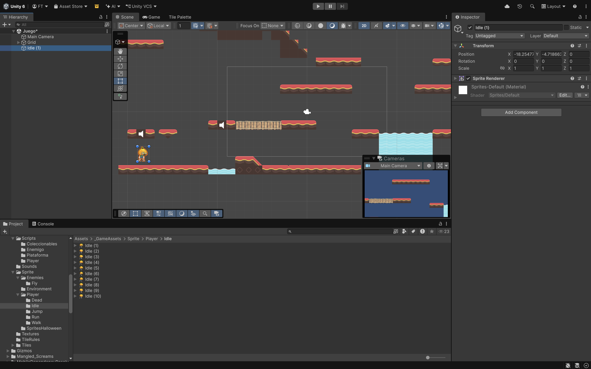
El Alumno deberá crear más animaciones como Dead....
Necesitaríamos incluir en el Player:
• PosicionPies GO vacío para saber si podemos saltar.
• PuntoGeneracionBala GO vacío.
• Componentes:
o RigidBody 2D, BoxCollider 2D, Animator, AudioSource.
o El Animator tendrá 3 Clips y mediante parámetros en la animación cambiaríamos de una
animación a otra:
- Idle.
- Walk.
- Jump.

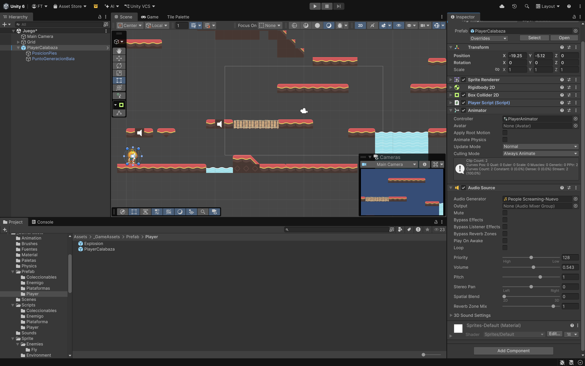
Crear un Animator Controller que se llame PlayerAnimator.
Necesitariamos crear varios Clips dentro de la ventana Animation Idle y Walking.
En este caso pasaremos el sprite arrastrándolo a la animación de la siguiente manera:
• Abrir la ventana de Animation.
• Crear un New Clip Idle. Y Add Property.
• Seleccionar Sprite Renderer y desplegar en la flecha.
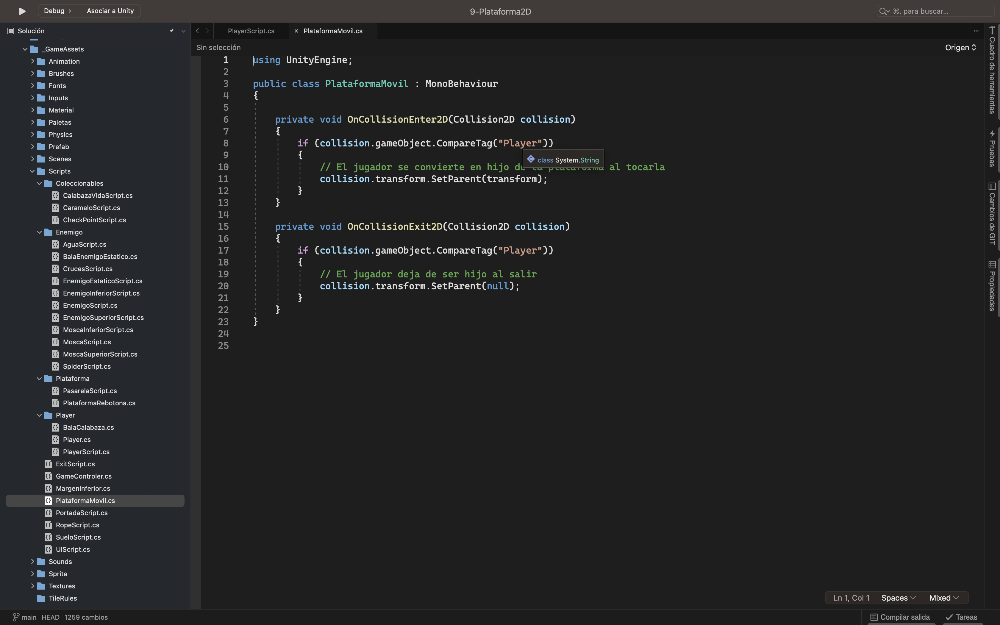
• Seleccionar Sprite dentro de Sprite Renderer.

• Cuando le damos "+" incluira una linea con el sprite que tenemos por defecto en el Player.

• Y ahora simplemente me voy a donde tengo los sprites del Player y arrastro el siguiente en la linea de tiempo. Lo puedo arrastrar donde más me convenga.
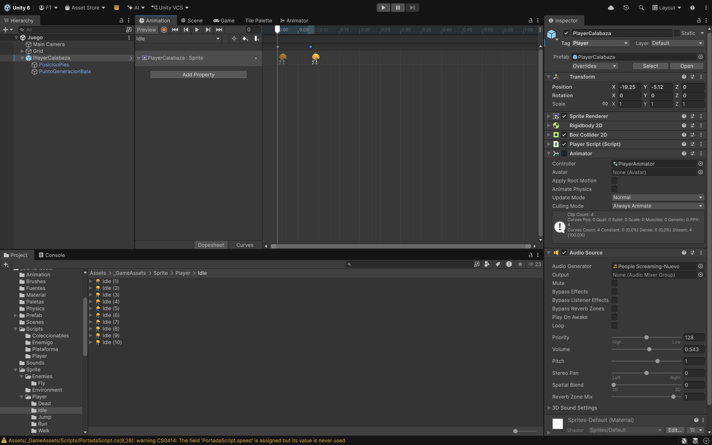
Asi hariamos todas las Animaciones que necesitemos.
En la ventana de Animator necesitamos incluir un parámetro bool Andando. Y hacer las transiciones necesarias
entre Idle y Walking.
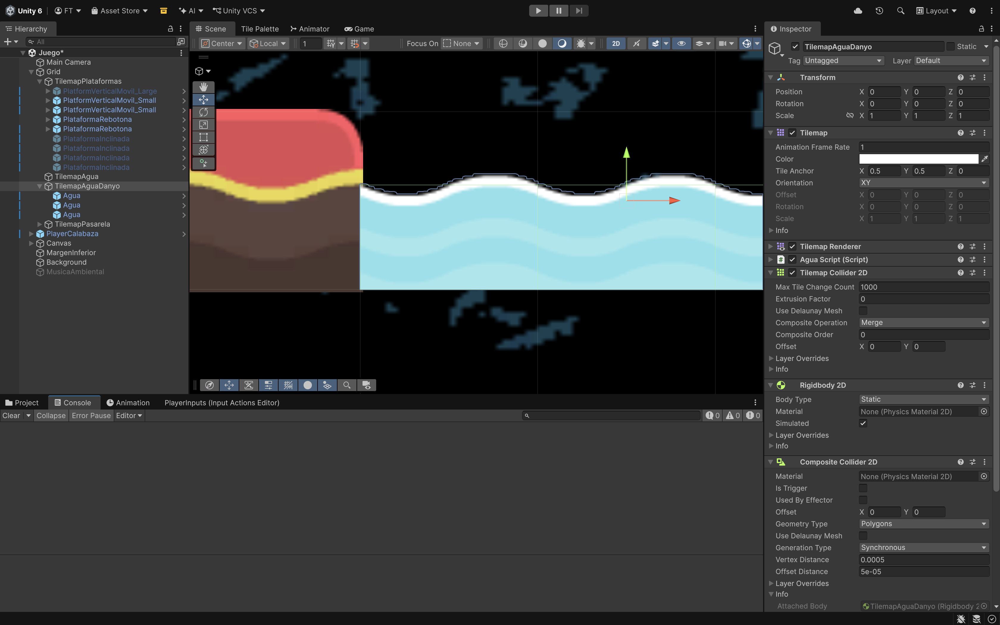
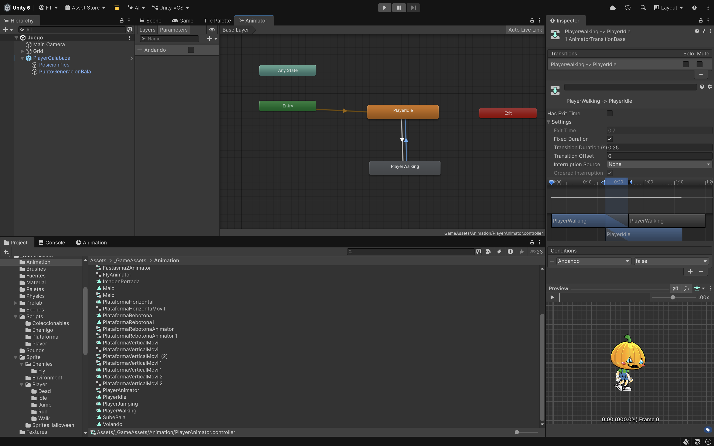
• Variables: Tendremos variables públicas que lo pasaremos desde el Editor y otras privadas.
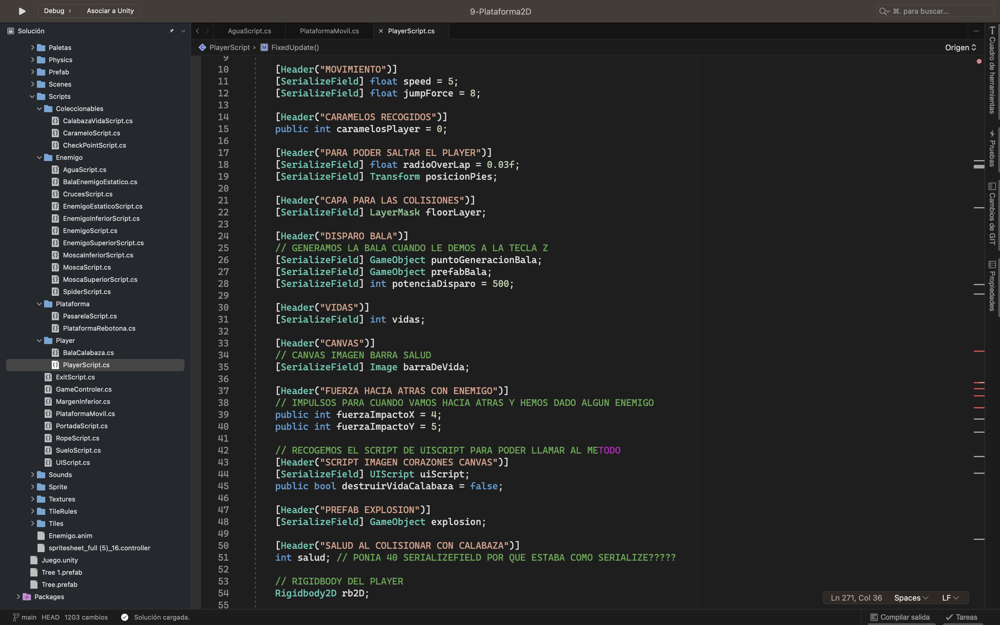
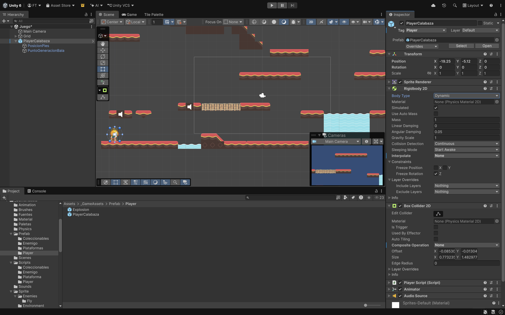
Para los parámetros que sean tipo TMP_Text necesitaremos incluir al principio del Script la libreria TMPro.
El alumno puede crear otras variables que pueda ir necesitando.
En Unity (programado en C#), un enum (enumeración) es un tipo de dato especial que permite definir una lista fija de opciones constantes. Es muy usado para gestionar estados (ej. enemigo en modo Patrulla, Persecución o Ataque) o categorías, mejorando la legibilidad del código y evitando errores al escribir texto.
Antes del Método Start tenemos otro que es el Awake():
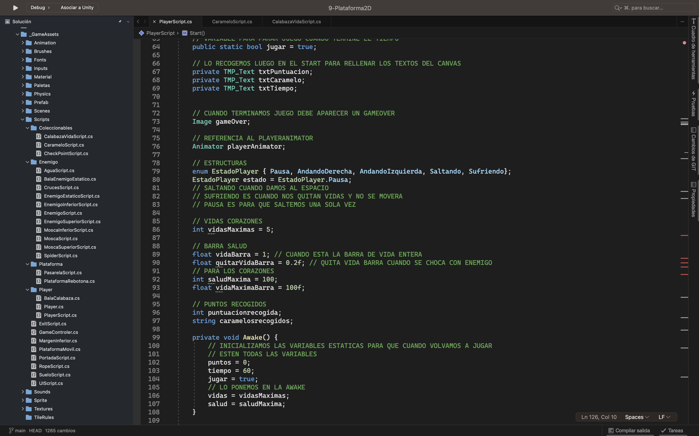
El método Awake en Unity es la primera función que se ejecuta en el ciclo de vida de un script (incluso antes que Start(). Se llama automáticamente justo cuando el objeto se carga o se instancia y sirve para inicializar variables o configurar referencias.
En esta imagen vemos algunos parámetros ya rellenos del Script del Player.
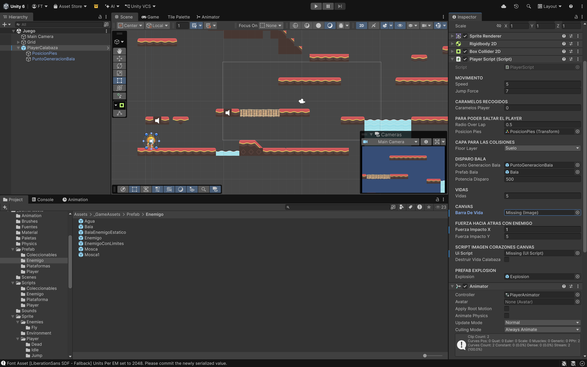
• Start()
o Recoger el RigidBody del Player para poder moverlo.
o Y el Animator.
En el Update recogeremos el estado y crearemos la bala del disparo. Y el movimiento físico lo haremos en el FixedUpdate.
• Update()
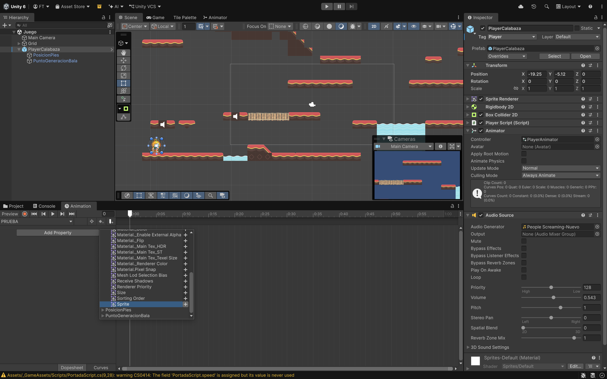

o Con el Espacio salta(GetKeyDown(KeyCode.Space)).
- Estado = estadoPlayer.Saltando. Cambiando el estado.
o Si está sufriendo y toca el suelo (Método EstaEnElSuelo())) lo dejamos en pausa.
- Método EstaEnElSuelo().
Aunque nos aparece en FixedUpdate el linearVelocity subrayado en rojo es un problema del Editor pero funciona correctamente.
• Método EstaEnElSuelo()
o Este método nos devuelve un bool.
o Recogemos todos los collider haciedo un OverlapCircle desde la posicionPies que pasamos
por parámetro, muy pequeño y comprobamos si estoy chocando con el suelo (floorLayer que creamos y pasamos
por parámetro) Physics2D.OverlapCircle.
o Si lo que nos devuelve no es nulo es que ha chocado con algo.

• FixedUpdate() Haremos los movimientos del Player.
o Movimiento en Horizontal X con GetAxis. (xPos).
o ySpeedActual = rb2D.linearVelocity.y la velocidad de Y que tiene actualmente.
o Si el Player está Sufriendo no se moverá.
- Esto lo hacemos para que no continue con el script poniendole un "return".
o Primero comprobamos si tiene que andar.
- Si Math.Abs(xPos) > 0.01f Anda y si no se para (cambiar parámetro "Andando" de la
Animación). Le quitamos el signo con el valor Absoluto Math.Abs.
o Si su estado es igual a saltando.
- estado lo ponemos a EstadoPlayer.Pausa para que solo salte una vez.
- Si EstaEnElSuelo() le ponemos la fuerza del salto con rb.linearVelocity = new
Vector2(xPos * speed , jumpForce).
- Si no EstaEnElSuelo() rb.linearVelocity = new Vector2(xPos * speed , ySpeedActual).
o Y Sino xPos > 0.01f Hacia la derecha.
- Le damos su rb.linearVelocity = new Vector2(xPos * speed , ySpeedActual).
- Comprobar si esta su estado a la izquierda hay que rotar el player con localScale.
o Y Sino xPos < -0.01f Hacia la izquierda y hacer lo mismo que la derecha.
Si vemos que la animación se desliza tenemos que chequear en la Animator del Player el Apply Root Motion y darle más fuerza para que se mueva.
El Input System es un paquete diseñado para gestionar las entradas de dispositivos (teclado, ratón, mandos, pantallas táctiles) en Unity. Permite mapear acciones (como "saltar" o "mover") a diferentes botones físicos, facilitando el soporte multiplataforma, la reconfiguración de controles y la detección automática de mandos.
A continuación dejo el Script de como podría ser el Movimiento con el Input System. Está explicado en el enlace.
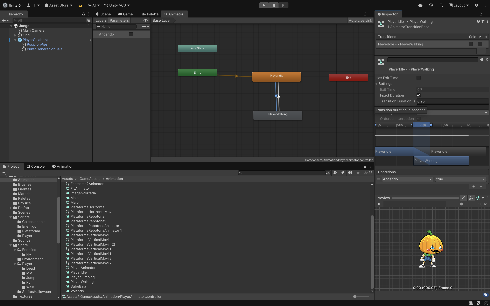
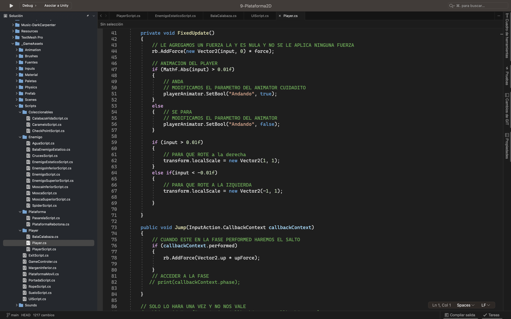

En este punto decidir como quereis hacer el movimiento del Player y si quereis hacerlo con estados (Enum) o no. El Metodo EstoyEnElSuelo() se podría quitar.
• Update()
o Hay que crear un Prefab bala que se disparara con la tecla Z.
o El Prefab bala y el punto de Generación de la Bala se pasa por parámetro desde el Editor.
o Dispara si doy a la Z (GetKeyDown(KeyCode.Z)) y si no está en Pausa.
- Crear la bala en la posición y rotación del punto de generación de la bala.
- Si estado = EstadoPlayer.AndandoIzquierda/AndandoDerecha el disparo saldrá a
la Izquierda/Derecha con AddRelativeForce con sonido.
- Y pongo la variable derecha para poder llamarla desde el Agua.
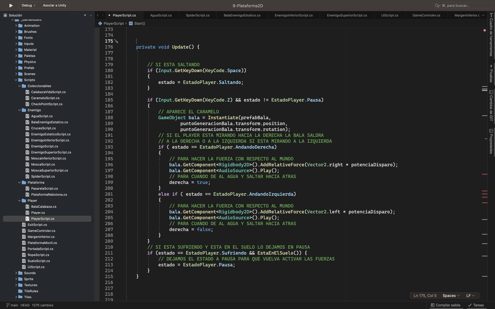
Solo matará al Enemigo. Está formada por:
• Tag Bala.
• RigidBody.
• AudioSource

• Script BalaCalabaza.cs.
o Le pasamos un parámetro desde el Editor que será el PlayerScript.cs.
o Cuando colisiona la bala con el EnemigoConLimites cuyo name es "Malo":
- Incrementar los puntos del player llamando a un método que está en su Script.
- Destruir el EnemigoConLimites.
- Destruir Bala.
o Y sino se destruye solo la Bala.

• Le pasamos los puntosAIncrementar en el método.
• Sumamos esos puntosAIncrementar a los puntos totales que tenemos.
• Buscar la puntuación del Canvas y actualizar su valor.
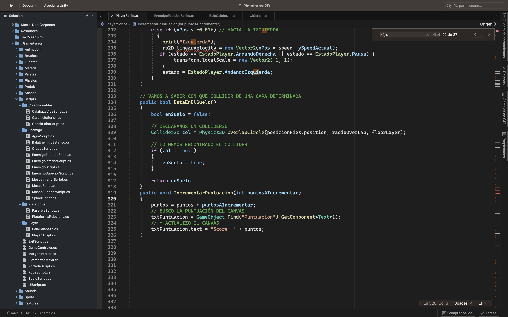
Vamos hacer primero el Canvas con todo su contenido y luego hacemos el EnemigoConLimites para
comprobar que todo funcione.
El Canvas contendrá lo siguiente:
• BarraVidaAbajo una imagen (Amarilla).
o Source Imagen a None.
• BarraVidaArriba una imagen (Roja).
o Image Type Filled.
o Fill Method Horizontal.
o Fill Origin Left va hacia la izquierda.
o Fill Amount 1.
• Panel Vidas (Corazones).
o Tiene desactivada la Image para que no se vea el color.
o Componente Horizontal Layout Group para poner los corazones en horizontal.
• ImagenCaramelo.
• Caramelo es el número de caramelos recogidos.
• TextoTime una imagen.
• Time es el tiempo que pasa e ira quitando vidas cuando llegue a 0.
• TextoPuntuacion una imagen.
• Puntuacion es la puntuación obtenida cuando el Player:
o El Player toque la parte superior del EnemigoConLimites.
o El Player toque la parte superior de la Mosca.
o La Bala toque al EnemigoConLimites.
o El Player recoja los caramelos.
• GameOver es una imagen que se desactivara en el Start hasta que termine el juego.
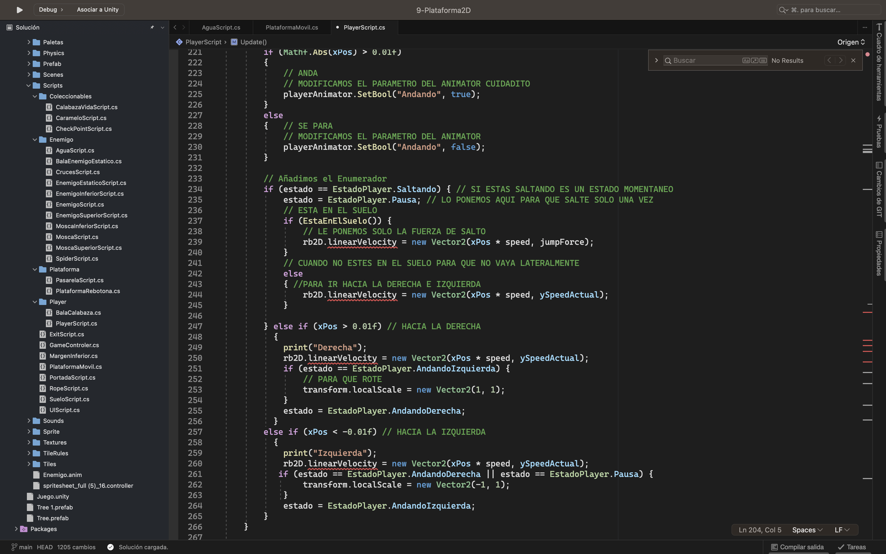
El Canvas tiene asociado un Script UIScript.cs. Pasaremos por parámetro:
• Image[] imagenesVida: Contendrá todos los corazones nada más empezar el juego en el Start().
• Image prefabImagenVida: será el Prefab corazón que tendreis que crearlo.
• GameObject panelVidas: para poder colocar los corazones en el panel.
• PlayerScript player: para poder acceder a sus métodos para poder obtener la vida del Player
y modificar los corazones.
• Start().
o Obtenemos el número de vidas que tiene el player con un metodo GetVidas().
o Crear un array con ese numero de vidas recogido.
o Recorrer el array y crear un corazón en el transform del panel.
• Método RestarVida().
o Obtenemos el número de vidas que tiene el player con un metodo GetVidas().
o Recorrer el Array para poner el color distinto al resto de los corazones. Asi distinguimos
cuanta vida me queda.
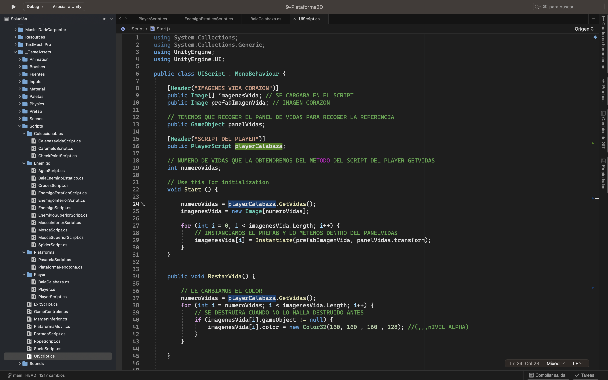
Vamos añadir 4 métodos nuevos que llamaremos a lo largo del juego:
• Método GetVidas().
o Retorna la variable de vidas.
Método GetPuntos().
o Retorna la variable de puntos.
• Método ContarSegundos().
- Tendremos un tiempo de 60 segundos antes de que me quite una vida.
- Y hay que llamar a este método cada segundo e ir restando ese tiempo al contador desde
el Start().
- Y cuando llegue a 0 le ponemos juego = false para quitar el corazón o para terminar
el juego si ya no tenemos más vidas.
• Método FinalizarJuego().
- Cargamos la Escena Portada que la dejaremos pendiente de hacer..
Pendiente Escena Portada. Pendiente jugar en PlayerScript.cs Update
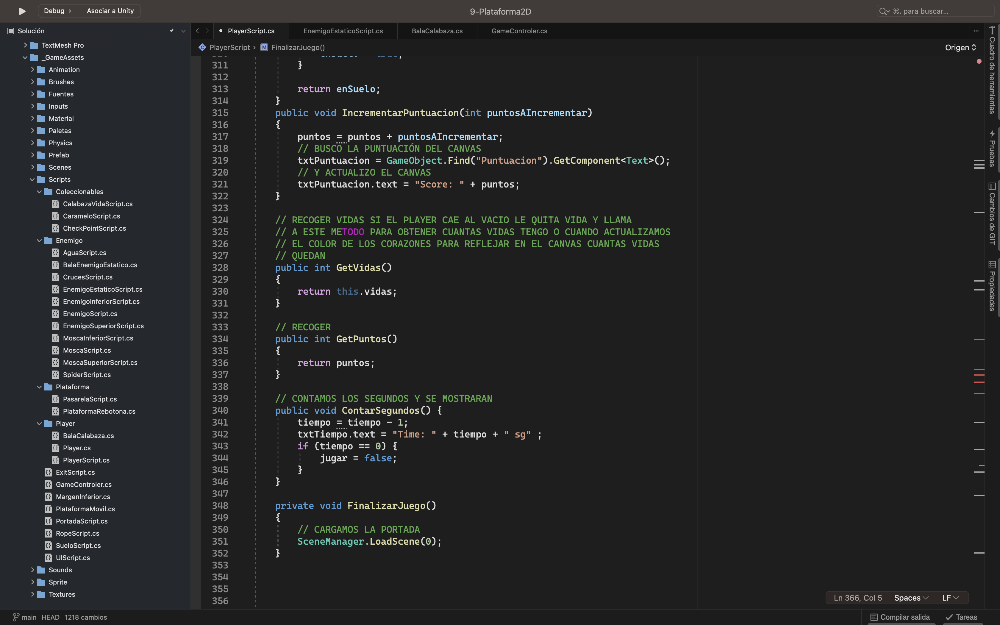
Vamos a ver el método Start() ya que lo necesitamos para recoger referencias a variables, recoger variables que
iremos guardando en los PlayerPrefs......
• Recoger la referencia de los textos del Canvas y la imagen del GameOver con el Find (tambiñen se podría
pasar por parámetro).
• Y mostramos los Textos en el Canvas.
• Hacemos un InvokeRepeating llamando a ContarSegundos() que se ejecutará cada segundo.

Antes de continuar con el Start() vamos a crear un Script nuevo GameControler.cs. Este Script contendra los Get y Set de los PlayerPrefs para guardar posiciones, puntos, caramelos y para parar las animaciones cuando el juego termine:
Todos los métodos serán STATIC para que podamos llamarlos desde cualquier script.
• Lo primero que hacemos es crear unas variables contantes (para que no se puedan modificar) con el nombre
que tendrá en el PlayerPrefs.
• Métodos para cargar y recoger la posición:
o StorePosicion(Vector2 posicion) le pasamos el Vector2 y cargamos las X e Y en las variables y
salvamos.
o GetPosicion() devolvemos un Vector2 pero antes preguntamos si existen con HasKey por si es la
primera vez y no tienen datos y devolveriamos un Vecto2.zero.
• Métodos para cargar y recoger los puntos:
o StorePuntos(int puntuacion) le pasamos los puntos y salvamos.
o GetPuntos() devolvemos un valor int pero antes preguntamos si existe con HasKey por si es la
primera vez y no tienen datos y devolveriamos un 0.
• Métodos para cargar y recoger los caramelos:
o StoreCaramelos(int caramelos) le pasamos los caramelos y salvamos.
o GetCaramelos() devolvemos un valor int pero antes preguntamos si existe con HasKey por si es la
primera vez y no tienen datos y devolveriamos un 0.
• Método PararAnimaciones().
o Recoger en una Array todas las GameObject que tengan en su tag = Animaciones.
o Recorrer el Array y desactivar todas las animaciones.
• Método StoreGO().
o Cargamos el objeto a 1 para que cuando volvamos a jugar si ya lo hemos recogido no vuelva
aparecer.

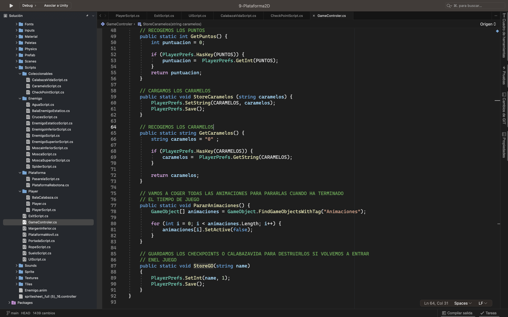
Continuamos con el Start:
• Comprobamos si existen datos en el PlayerPrefs mediante el metodo static GetPosition() y recogemos
las posiciones y se las colocamos al player.
o Recogemos también los puntos y los caramelos y los mostramos en el Canvas.
• Y si no tiene datos es porque es la primera vez que jugamos y recogemos la posicion actual del
player y lo guardamos en el GameControler.StorePosition().
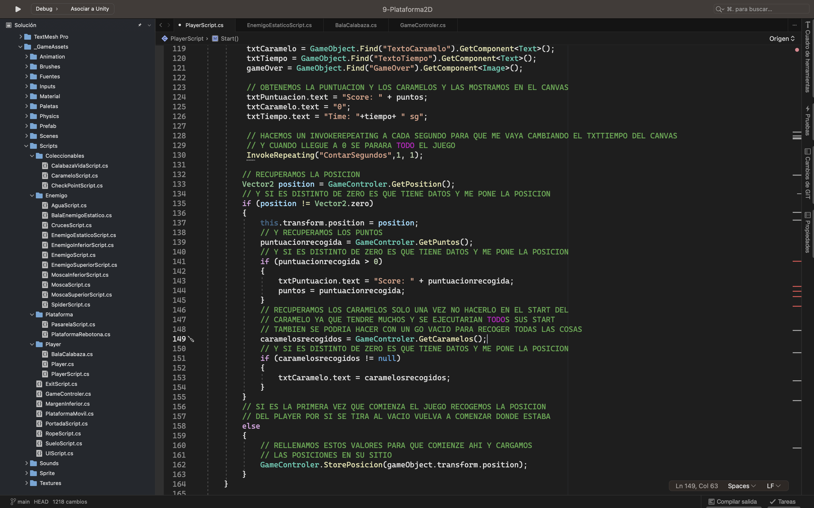
Nos quedan todavia varios métodos en este Script para terminar:
• QuitarVidas():
o Cuando toca el Player el Agua (Tilemap).
o Cuando la bala del enemigo estático da al Player.
o Cuando el Player colisiona con un MargenInferior (como si se tirara al vacio).
o Cuando el Player colisiona con el Spider.
• RecibirSalud (int incrementoSalud).
o Son GO que estarán por los niveles para poder recuperar la salud.
• RecibirDanyo (int danyo, bool derecha, string tipoEnemigo):
o Cuando toca el Player a la Mosca, al Enemigo y al Spider por los laterales o por la parte
de abajo le quita barra de Vida y salud.
o También cuando se toque el Agua.
• CambiarPosicionPlayer (bool derecha, string tipoEnemigo).
MargenInferior GO vacio que estará situado en la parte baja y que tendrá un Script MargenInferior.cs como si se cayese al vacío.
Que pasa con el resto de los MArgenes?????. Sonidos crear un link con todos los sonidos, sprites.... Spider Pendiente?????
Método QuitarVidas():
• Restar 1 vida.
• Poner un sonido.
• Si sigo teniendo vidas:
o Llamar al metodo uiScript.RestarVida() y se cambiara de color el corazón.
o Hay que volver a dejar la barra de vida entera.
• Si no tengo vidas:
o Explosión del Player.
o Finalizar juego Menú portada llamamos al método.

Método RecibirSalud (int incrementoSalud):
• Tenemos una saludMaxima de 100 y la salud la sumamos al incrementoSalud pero nunca
podrá sobrepasar ese valor.
• Si la salud sobrepasa ese limite:
o La volveremos a inicializar a 100.
o La variable destruirVidaCalabaza se quedara a false para que no se destruya
en el Script CalabazaVidaScript.cs.
• Y sino :
o La variable destruirVidaCalabaza se quedara a true para que se destruya
en el Script CalabazaVidaScript.cs.
o Se suma a la vidaBarra el incrementoSalud / vidaMaximaBarra.
• Y rellenamos la barra con la vidaBarra que hamos calculado anteriormente.

Método RecibirDanyo (int danyo, bool derecha, int contrario):
La vidaBarra = 1 estára la barra entera.
• vidaBarra -= quitaVidaBarra que esta inicializado a 0.2.
• Modificar la barra barraDeVida.fillAmount = vidaBarra.
• Restar la salud salud -= danyo;.
• Si la salud <= 0.
o QuitarVidas() Quitamos corazones.
o salud = saludMaxima (100) Volvemos a inicializar a 100 la salud.
• CambiarPosicionPlayer(bool derecha , string tipoEnemigo, int contrario).
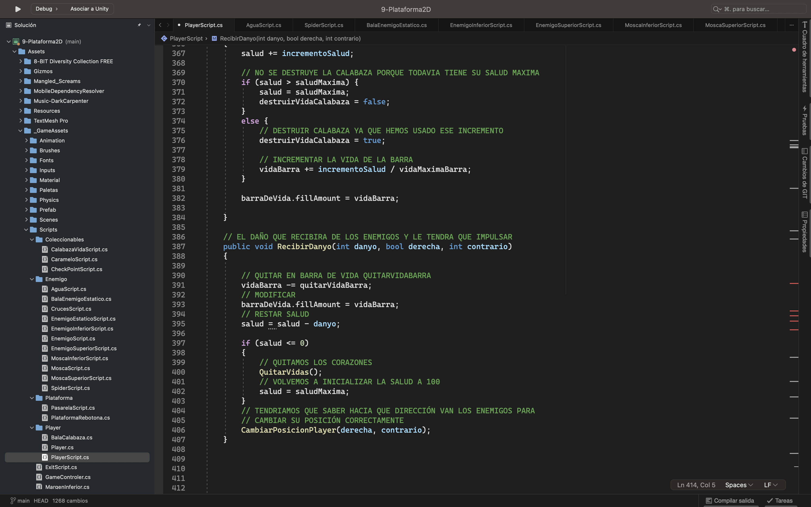
Método CambiarPosicionPlayer(bool derecha, int contrario):
Para poder saber hacia que lado el Player se moverá cuando se de con un Enemigo tenemos que saber
de que tipo de Enemigo se trata ó hacia donde este andando el Player. Cuando hagamos a los enemigos
iremos modificando su Tag para que este metodo funcione correctamente.
• Si el Enemigo va hacia laderecha.
o Comprobando su estado hacemos una fuerza hacia la derecha.
o Inicializar estado del Player a Sufriendo.
• Si el Enemigo va hacia la izquierda.
o Hacemos fuerza hacia la izquierda.
o Inicializar estado del Player a Sufriendo.
Variable contrario es cuando el Player colisiona con la parte superior del enemigo/mosca salte hacia el lado contrario del movimiento de los enemigos y no se quede encima de ellos.
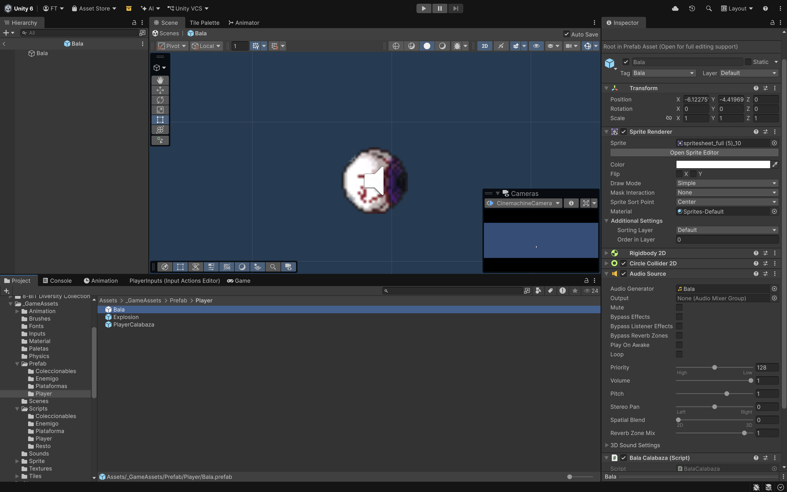
ForceMode2D Añade un impulso de fuerza instantáneo al rigidbody2D, utilizando su masa.
La variable bool derecha la recogeremos en los enemigos cuando los hagamos.
Si tu personaje tiene un componente Animator para controlar sus animaciones y la casilla Apply Root Motion está marcada, el sistema de animación toma el control absoluto de la posición del personaje e ignora por completo las fuerzas físicas del Rigidbody2D.
Método SaltoAlVacio().
• Obtenemos la posición que tenía nuestro Player con GameControler.GetPosition().
• Y colocamos al Player en esa posición.

Para poder llamar a este metódo necesitamos un GO vacio que llamaremos MargenInferior:
• Contendra un Script llamado MargenInferior.cs con un Método de OnCollisionEnter2D:
o Si nos chocamos con el PlayerCalabaza:
- Quitar vida (Corazón) del Player.
- Y si tenemos todavia vidas llamaremos al método SaltoAlVacio().
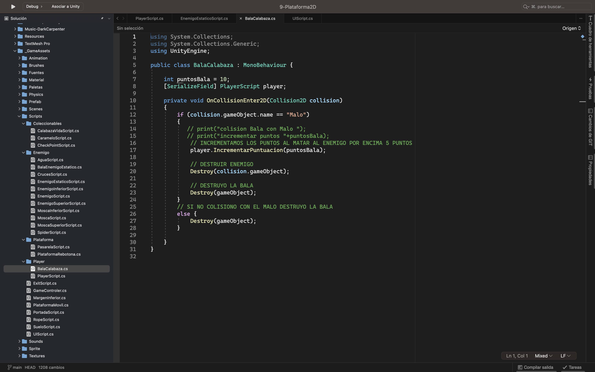

• Será un GO 2D Object/Sprites/Square.
• Buscar un Sprite para el BackGround y asignarlo al componente Sprite Renderer.
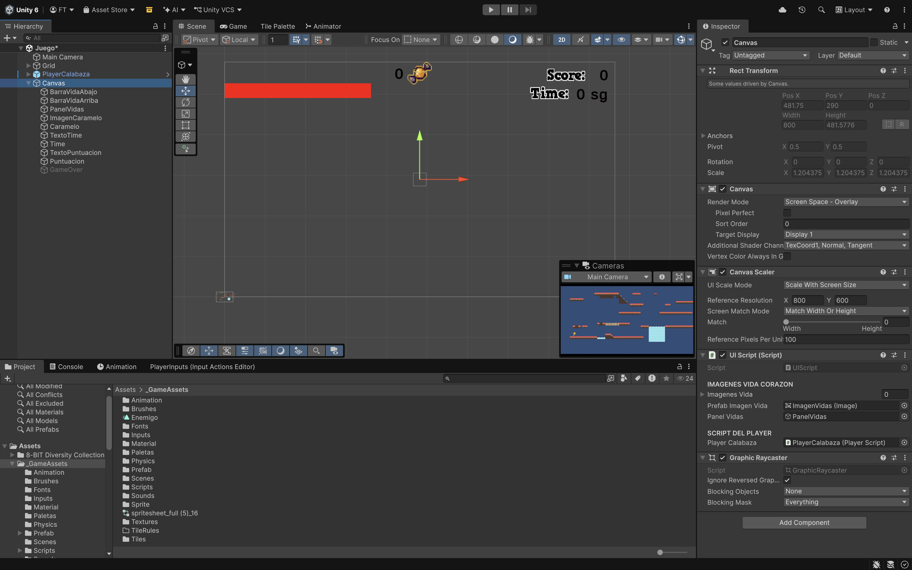
• Será un GO vacio con un componente AudioSource.
• Buscar una música con formato wav, mp3....y asignarlo.

No faltan definir los Coleccionables, Enemigos......
Los caramelos son coleccionables. Crearemos un Prefab con los siguientes componentes:
• BoxCollider2D.
• ParticleSystem.
• AudioSource.

• CarameloScript.cs:.
Nos dara 5 puntos cada vez que el Player lo recoja.
o OnCollisionEnter2D() Si choca con el Player:
- Player.IncrementarPuntuacion(puntuacion).
- Ira sumando cuantos caramelos voy recogiendo.
- ParticleSystem, AudioSource.
- Destruir el Caramelo.
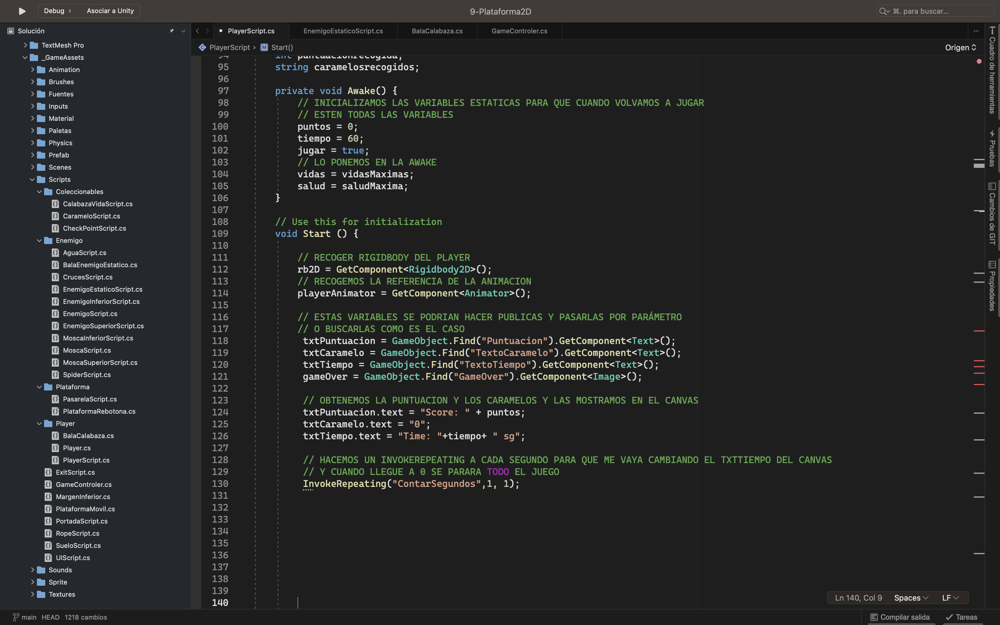
La salud nos aumentara la vida del Player. Crearemos un Prefab con los siguientes componentes:
• BoxCollider2D.
• ParticleSystem.
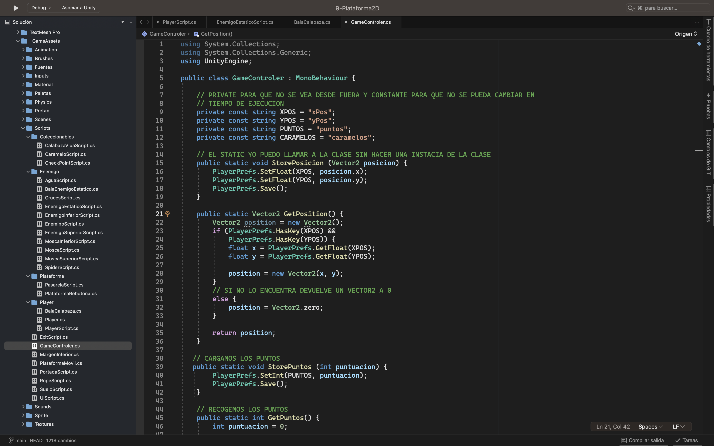
• CalabazaVidaScrip.cs:.
Nos dara 40 de salud cada vez que el Player lo recoja.
o Start().
- Destruimos el objeto por si ya ha sido recogido en otra partida.
o OnCollisionEnter2D() Si choca con el Player:
- Player.RecibirSalud(salud).
- Si Player.destruirVidaCalabaza es true.
• ParticleSystem.
• Y guardamos el objeto en un método GameControler.StoreGO() destruido para cuando empiece de
nuevo el juego se destruya.
• Destruir la CalabazaSalud.

Este Enemigo ira de derecha a izquierda continuamente a unos limites que añadiremos en el Prefab. Lo primero
que haremos será crear nuestro Enemigo:

• Enemigo.
o ColliderSuperior GO vacio.
- EnemigoSuperiorScript.cs.
• Si ha tocado el Player incrementara 10 puntos.
• Y cambia la posición del Player con la dirección del Enemigo y para que pase de largo.
• Y se destruye el Enemigo.
&em
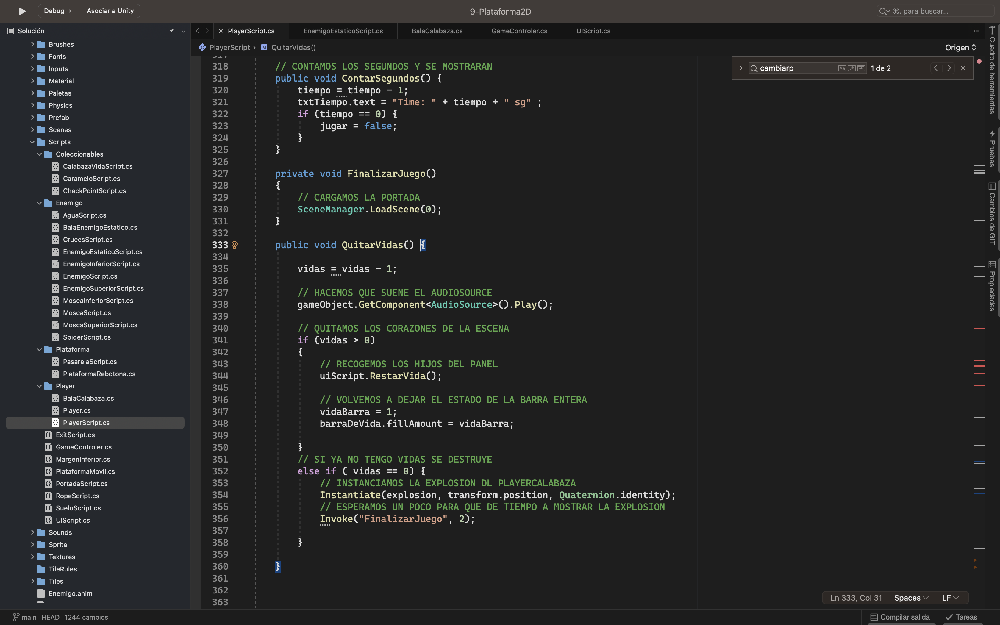
o ColliderInferior GO vacio.
- EnemigoInferiorScript.cs.
• Si ha tocado el Player modificamos la variable colisionaConPlayer a true.
• Llamamos al método de RecibirDanyo del Player y le hacemos una daño de 20. Y
pasámos varios parámetros:
o danyo.
o haciaDerecha para saber en que dirección anda el Enemigo.
o Y cambia la posición del Player con el Contrario a 1 para que salte hacia la izquierda.
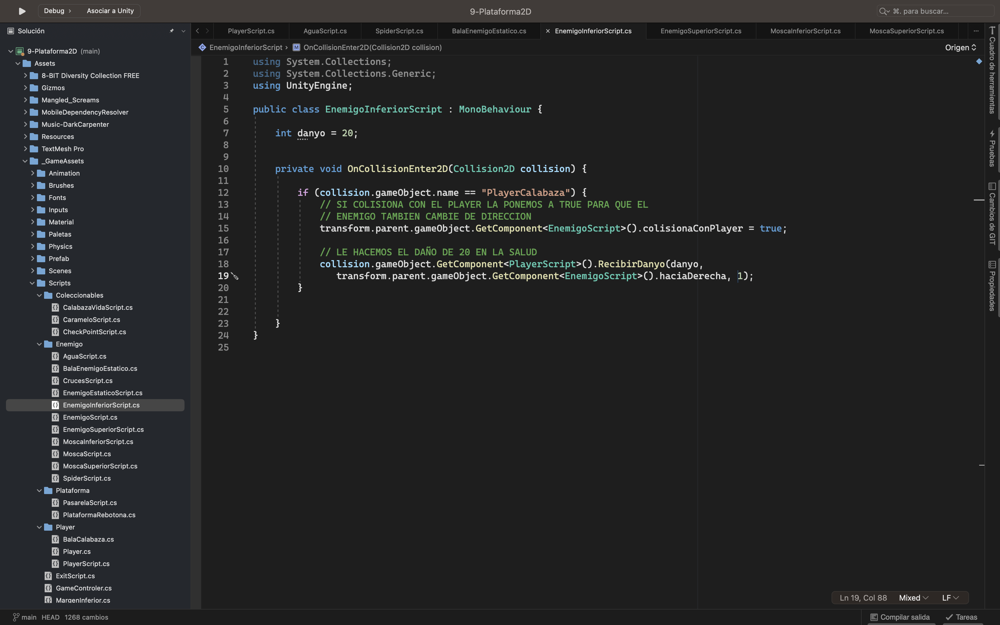
• Le ponemos un TAG Enemigo para poder diferenciarlo.
• ParticleSystem.
• Animator.
• RigidBody2D.
• EnemigoScript.cs:
o Límite Derecho/Izquierdo Transform.
o Hacia Derecha y ColisionaConPlayer son dos variables de tipo bool para saber la dirección del enemigo
por si da al Player saber hacia donde tiene que retroceder el Player. Lo ponemos public para poder acceder desde
otro script.
o Start:
- Recoger la posición del Límite Derecho.
- Recoger el SpriteRenderer para luego cambiar la orientación.
o Update:
- Si vamos a la derecha lo haremos con el Translate(Vector2.right * Time.deltaTime) y
si vamos a la izquierda con Vector2.left.
• Si ColisionConPlayer o supera el limite derecha/izquierda usamos un método de
CambiarOrientacion() e inicializar las variables haciaDerecha y ColisionaConPlayer.
o Método CambiarOrientacion().
- Si es derecha ponemos el sprite.flipX a false y sino al contrario.

El cambio de orientacion también se podria hacer con el transform.localScale.
Hacer un Prefab del Enemigo. Para hacer el Enemigo hemos usado un Prefab dentro de otro Prefab pero podriamos hacer solo uno.
Una vez que tenemos el Enemigo habrá que crear los Limites. Seria algo asi:
• GO vacio llamado Enemigo:
o LimiteIzquierdo GO vacio. Lo situamos un poco a la izquierda de nuestro Enemigo.
o LimiteDerecho GO vacio. Lo situamos en la posicion del Enemigo
o Añadir el Prefab que hicimos anteriormente y lo llamamos "Malo" ya que es el unico que podemos
matar con la bala.
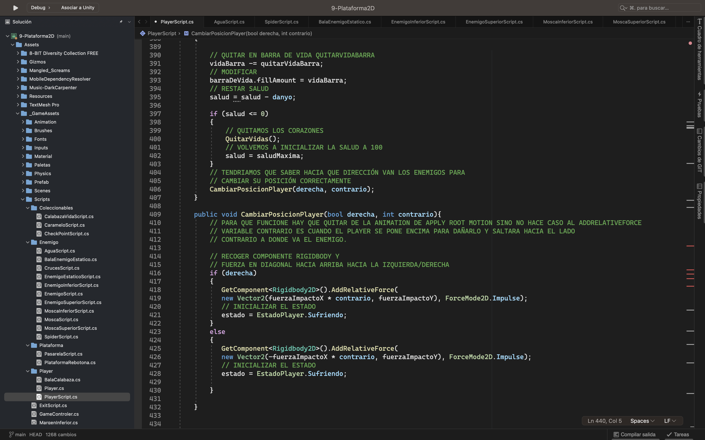
Hacer un Prefab del Enemigo para poder usarlo en nuestro juego.
Haremos una mosca que se mueva de derecha a izquierda y con un slider de vidas. Lo tendremos que hacer igual
que el Enemigo. La mosca la podemos hacer con un solo Prefab.
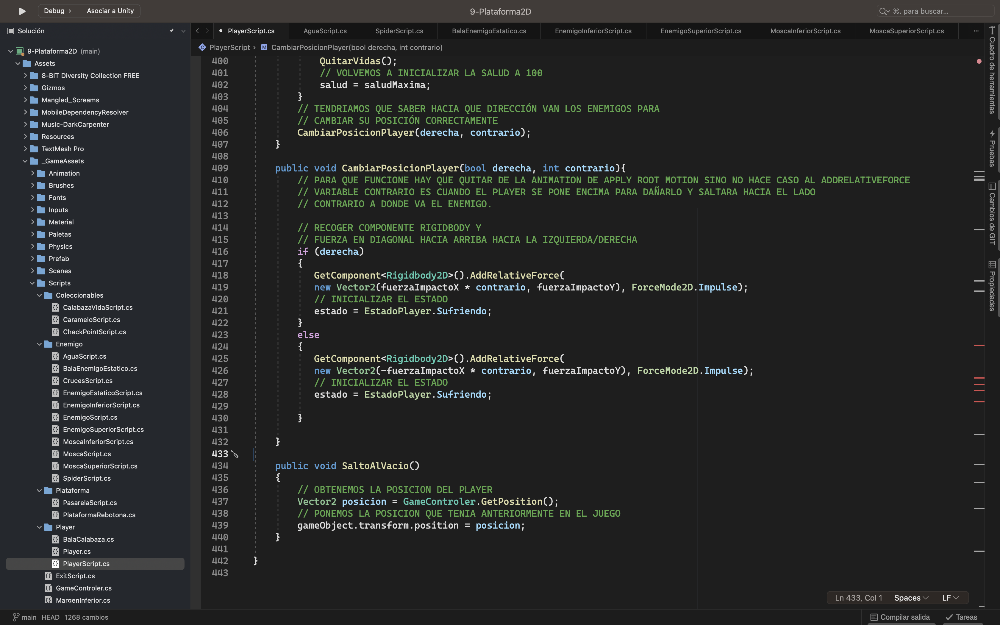
• MoscaConLimitesYSlider.
o LimiteDcho GO vacio. Lo situamos en la posicion del Enemigo
o LimiteIzqdo GO vacio. Lo situamos un poco a la izquierda de nuestro Enemigo.
o Mosca.
- Le ponemos un TAG Enemigo para poder diferenciarlo.
- Animator.
- MoscaScript.cs:
• Límite Derecho/Izquierdo Transform.
• Hacia Derecha y ColisionaConPlayer son dos variables de tipo bool para saber la dirección del enemigo
por si da al Player saber hacia donde tiene que retroceder el Player. Lo ponemos public para poder acceder desde
otro script.
o Start:
- Recoger la posición del Límite Derecho.
- Recoger el Slider del hijo.
o Update:
- Si vamos a la derecha lo haremos con el Translate(Vector2.right * Time.deltaTime) y
si vamos a la izquierda con Vector2.left.
• Si ColisionConPlayer o supera el limite derecha/izquierda usamos un método de
CambiarOrientacion() e inicializar las variables haciaDerecha y ColisionaConPlayer.
o Método CambiarOrientacion().
- Si es derecha lo hacemos con localScale en X a -1 e izquierda en X a 1.
o Método QuitarVida().
- Le restamos 25 al value del slider y retornamos el valor.
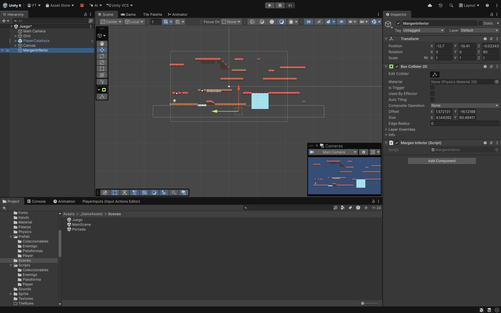
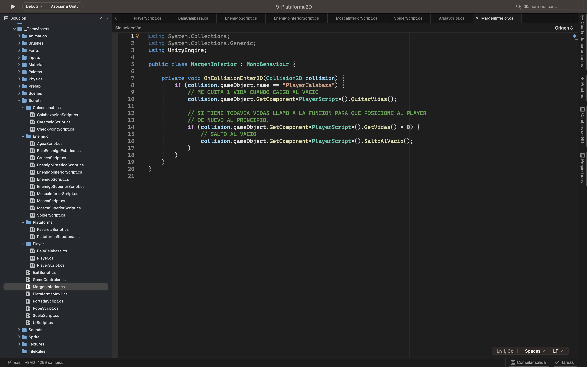
• ColliderSuperior GO vacio.
o MoscaSuperiorScript.cs.
- Si ha tocado el Player incrementara 5 puntos.
- Y cambia la posición del Player con la dirección de la mosca y para que pase de largo.
- Y si ya no tiene vidas comprobando el método de QuitarVidas() que
hicimos anteriromente se destruye la mosca.
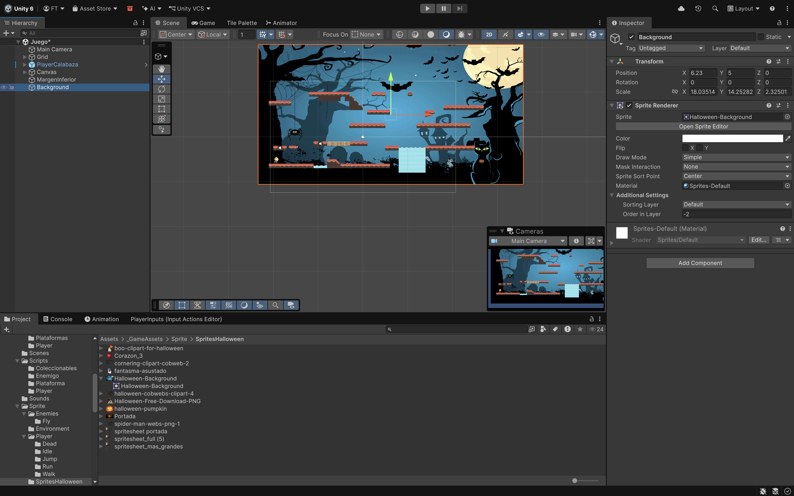
• ColliderInferior GO vacio.
o El MoscaInferiorScript.cs.
- Si ha tocado el Player modificamos la variable colisionaConPlayer a true.
- Llamamos al método de RecibirDanyo del Player y le hacemos una daño de 20. Y
pasámos varios parámetros:
• danyo.
• haciaDerecha para saber en que dirección anda el Enemigo.
• Contrario a -1 para que sale al contrario del movimiento del
enemigo.
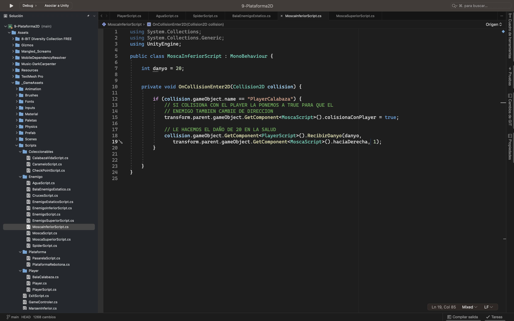
Guarda la posición del Player y recoge todas las puntuaciones que tengamos en ese momento, coleccionables… Y si volvemos a empezar no tendremos que volver a pasar todo el juego y se eliminara ese CheckPoint.
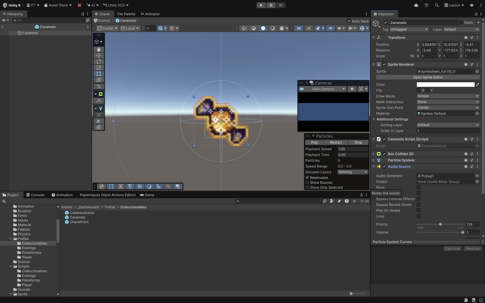
Componentes:
• BoxCollider2D con el IsTrigger Activado.
• AudioSource.
• CheckPointScript.cs:
o Start().
- Destruimos el objeto por si ya ha sido recogido en otra partida.
o OnTriggerEnter2D().
- Si ha colisionado con el Player:
- Recogemos la puntuacion y los caramelos.
- Y lo cargamos todo el el GameController.
- Ponemos un sonido.
- Y guardamos el objeto en un método GameControler.StoreGO() destruido para cuando empiece de
nuevo el juego se destruya.
- Y eliminamos el CheckPoint.
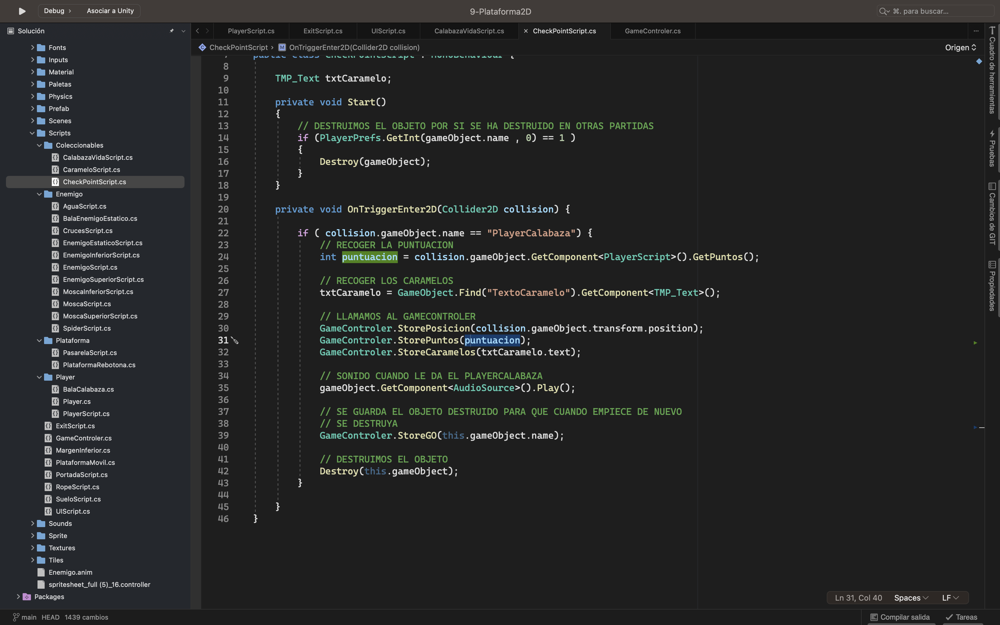
En el Script GameControler.cs añadimos este método para guardar el name del CheckPoint ó CalabazaVida que eliminaremos si volvemos a entrar en el juego.
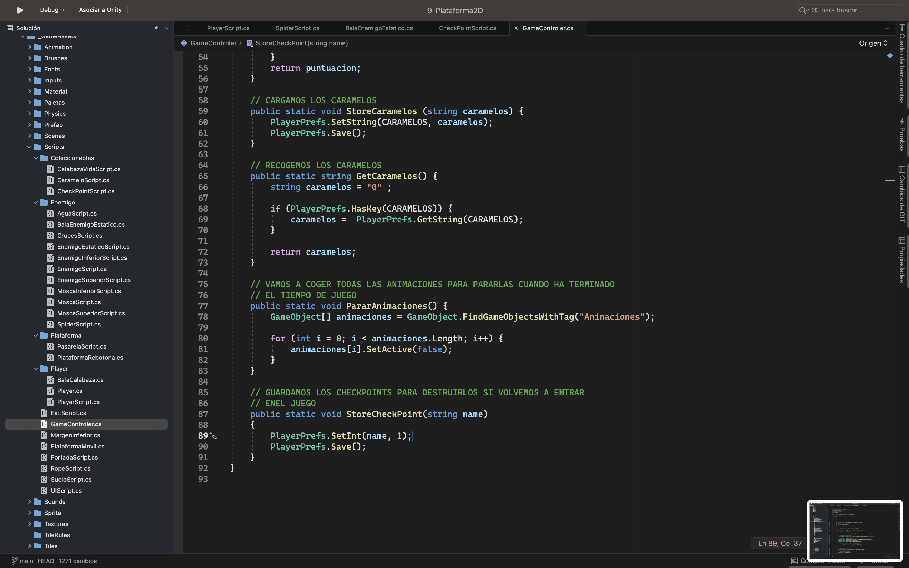
Vamos a crear un GO que contenga una tela de araña con una araña que este colgada de ella y que se mueva. Solo quitará vidas al Player.
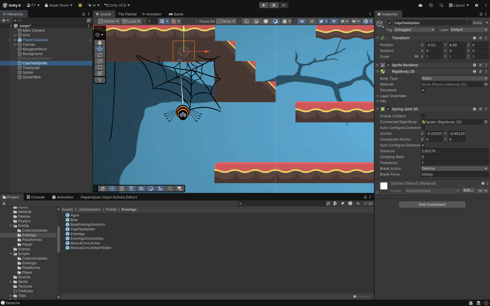
• GO 2D/Sprites/Square y le añadimos un sprite que hallamos usado para hacer las tiles. Lo llamaremos
CajaTelaSpider y contiene:
o Rigidbody2D Static.
o Spring Joint 2D conected a Spider (Rigidbody2D) cuando lo creemos.
• TelaSpider con un sprite de tela de araña.
• Spider.
o Rigidbody2D Dynamic.
o BoxCollider2D.
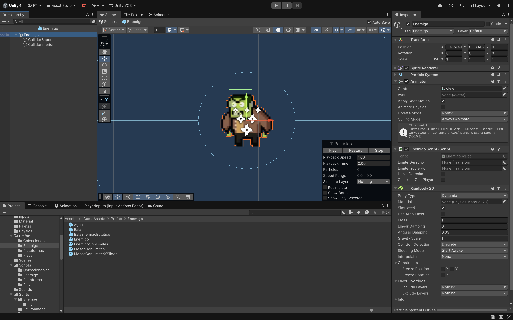
o SpiderScript.cs:.
- Start().
• Recoger el RigidBody2D.
- Update().
• Si la Velocidad Linear es mayor a 0 sera derecha y sino izquierda.
- OnCollisionEnter2D().
• Si colisiona con el Player le hara un daño y saltara hacia atrás.
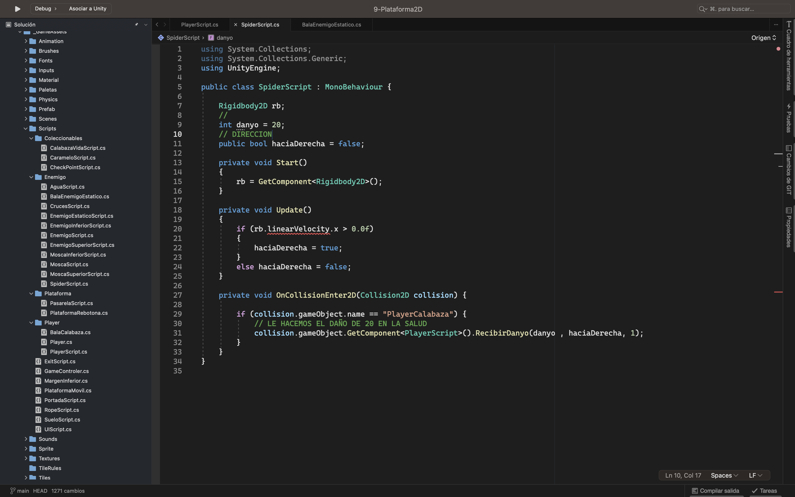
• SpiderWeb.
o Tiene un componene Line Renderer:
- Con 2 Posiciones de inicio y fin que va desde la CajaTelaSpider hasta el Spider.

o RopeScript.cs:
-Pasamos por parámetro el transform del Spider.
- Start().
• Recoger el LineRenderer.
- Update().
• Y modificamos la posición de un vértice especifico en una línea que ya ha sido
creada.
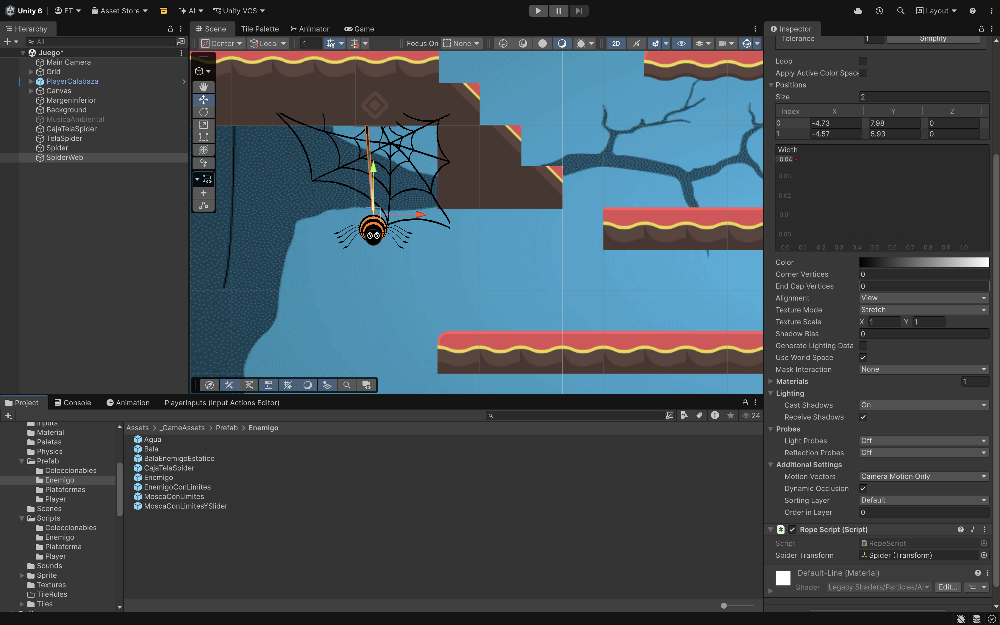
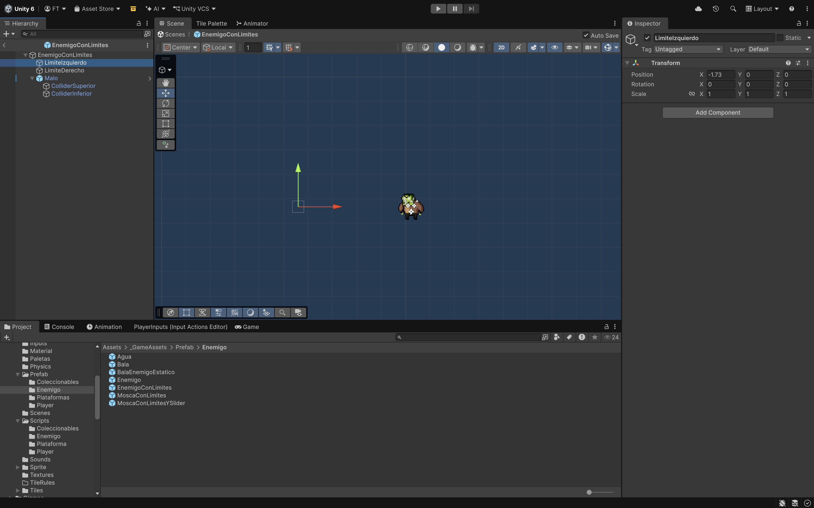
Es un enemigo que no se mueve y solo lanzara una bala cada cierto tiempo.
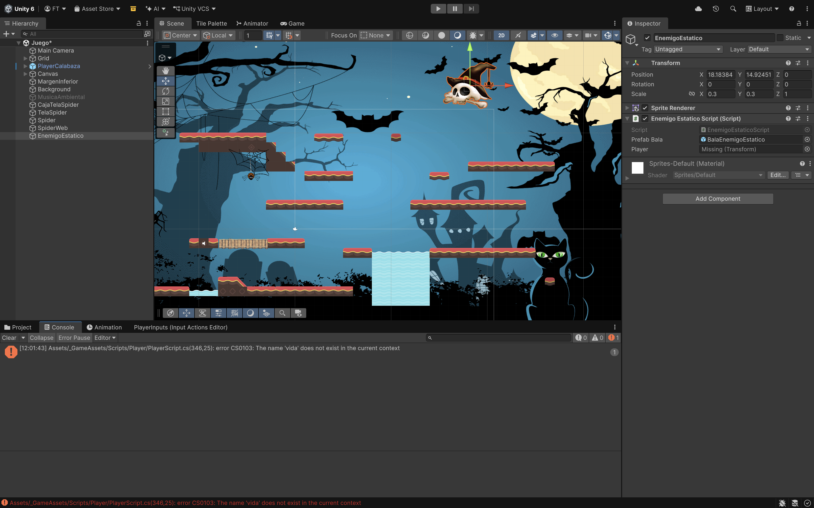
El Enemigo tendra asociado un Script EnemigoEstaticoScript.cs:
• Tendrá dos variables públicas que se las pasaremos en el Editor: Prefab Bala y el Transform.
Player para saber hacia que dirección se tiene que lanzar la bala.
• Start().
o Hacemos un Invoke al método LanzarBala cada cierto tiempo.
• LanzarBala().
o Instanciamos la bala.
o Para saber hacia donde se tiene que lanzar restaremos la posicion del player - posición
del enemigo Estático.
o Hacemos un AddRelativeForce con una potencia.
o Y un sonido.
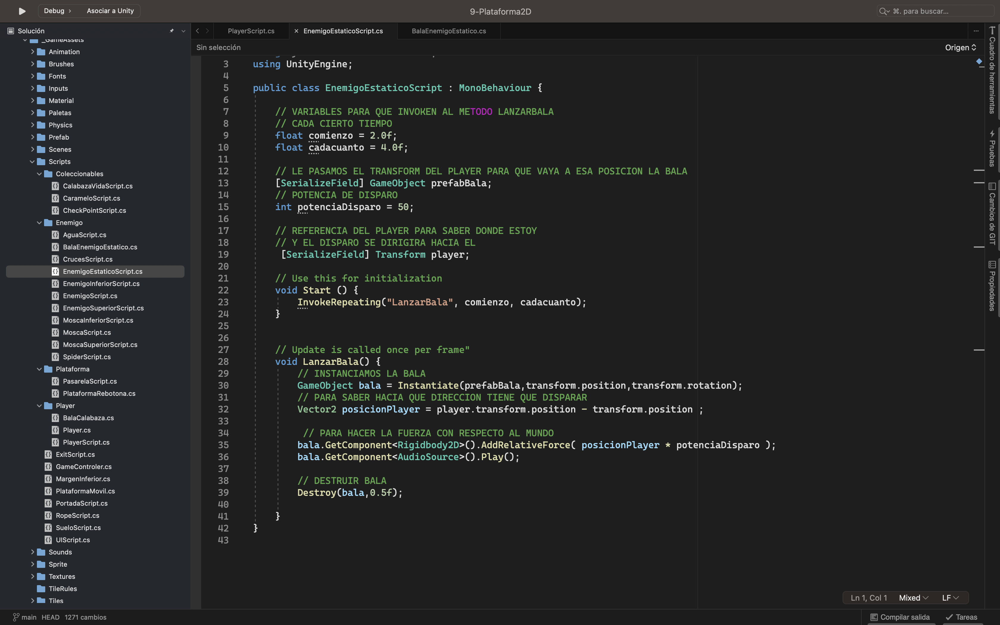
La bala será un Prefab.
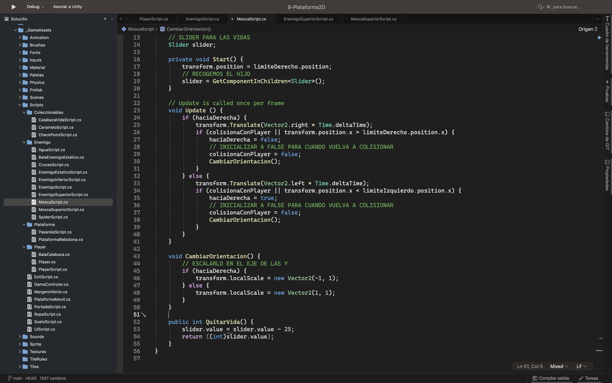
La Bala tendra asociado un Script BalaEstaticoScript.cs:
• OnCollisionEnter2D().
o Si colisiona con el Player le quitar 1 vida y la cambiara de posición.
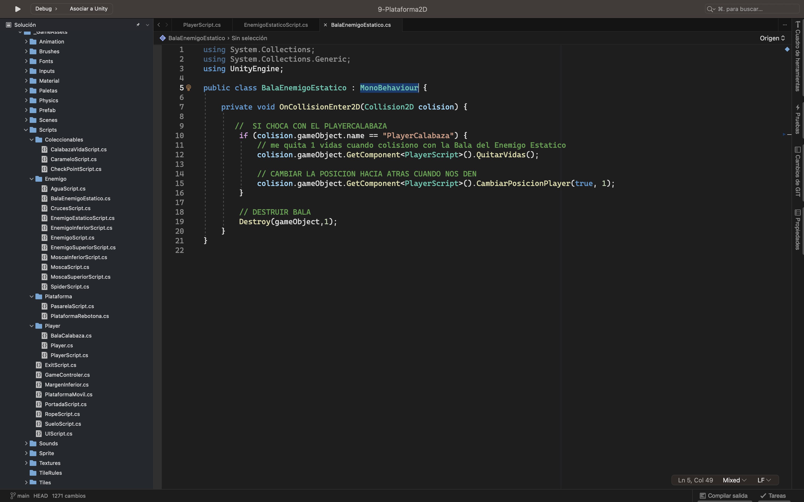
Es un OBJ que contiene:
• AudioSource.
• CoxCollider2D.
• ExitScript.cs.
o OnCollisionEnter2D().
- Si colisiona con el Player se hará un sonido y volvera a la Portada.
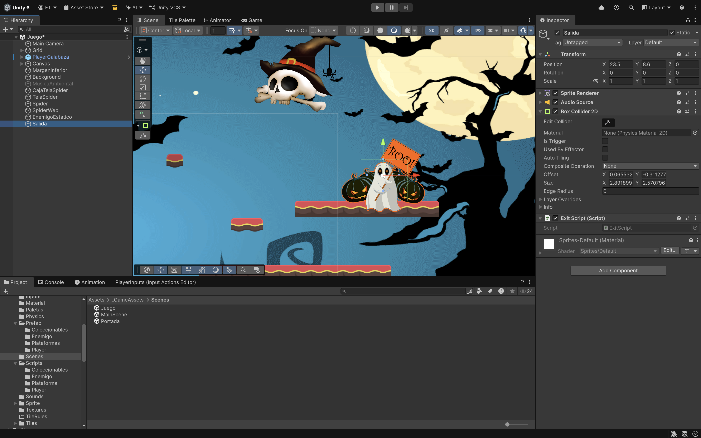
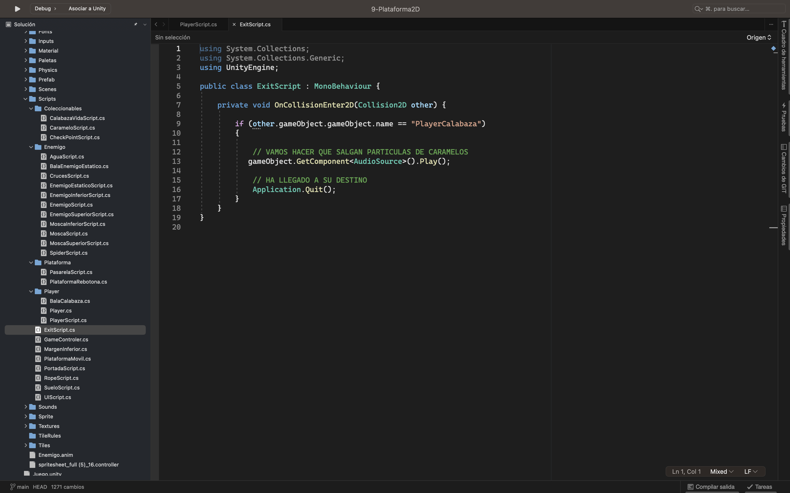
Tenemos que añadir en el Evento Update para poder parar animaciones y que termine el juego.
• Update().
o Si jugar es false:
- Cancelar el método ContarSegundos().
- Parar animaciones.
- Mostrar la imagen de GameOver.
- Llamamos al método FinalizarJuego()) para que cargue de nuevo la Escena Portada.
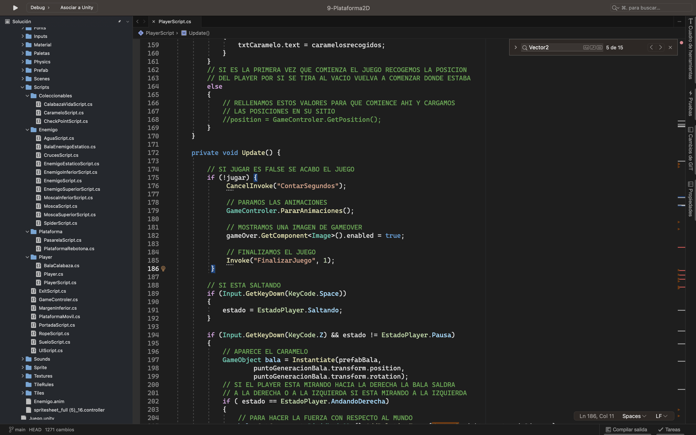
Descargar Package Cinemachine. Es una cámara virtual:
• Cinemachine/2D Camera y aparecerá un nuevo objeto CinemachineCamera y en la Main Camera
aparecerá un icono.
• AudioSource.
• Canvas.
o BackGround.
o Título (Image).
o Botón Reseteo Juego.(NO OBLIGATORIO Para resetear los PlayerPrefs)
o CanvasScriptContainer: PortadaScript.cs,
o Panel en vertical para poder poner 2 botones:
- Start: Event Trigger.
- Exit: Event Trigger.
o Imágenes de Canvas con Animaciones que vayan hacia la izquierda y vuelvan a empezar.